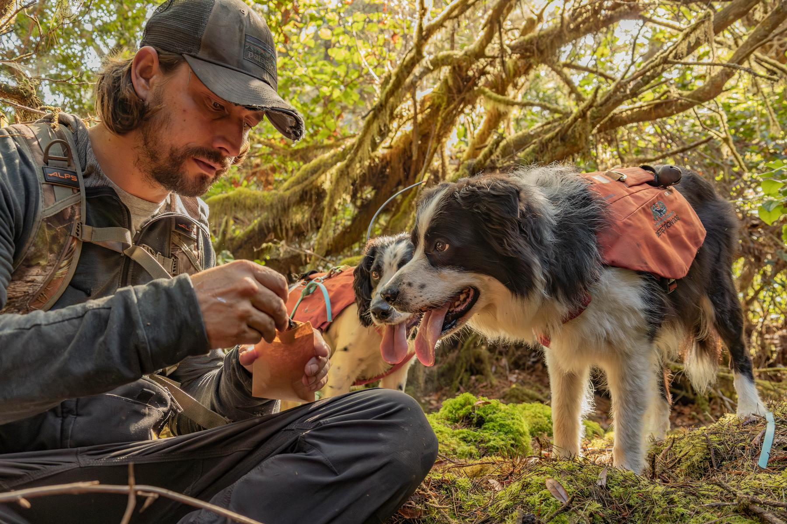

Work With Us
Study design, field methods, laboratory work and analysis for agencies, tribal nations, NGOs, industry and academic partners across the Pacific Northwest and beyond.
From Study Design to Defensible Results
We offer the analytical depth of a research university and the logistical capacity of a wildlife consulting program. Our partners are agencies, tribal nations, NGOs, industry and academic groups who need an answer about a species or a landscape and need it to hold up.
A project can be full service, from study design and field crews through laboratory work, analysis and reporting. It can also be analysis only, on samples or data you already hold.
Tell us about your study system and what you need to learn from it. We will tell you honestly whether we are the right group for the work, and who else to talk to if we are not.
Email Us About a ProjectCapabilities Across Taxa & Methods
From data collection in the field to laboratory and computational analysis, for wildlife research at any scale
Traditional Wildlife Trapping & GPS Collaring
Large-scale mammal capture programs using box traps, snares, and telazol immobilization. We deploy GPS and VHF collars to generate telemetry datasets that underpin home range, movement, and survival analyses.
Noninvasive Genetics & eDNA
Hair snares, scat transects, and water and sediment filtration for environmental DNA. Individual identity, species composition, and population parameters, without ever handling an animal.
Camera Trap Networks & Computer Vision AI
Deployment and management of large camera trap arrays paired with deep learning classifiers trained for your species and your cameras, turning millions of images into detection data at scales impossible with manual review.
Passive Acoustic Monitoring & Bioacoustics AI
AudioMoth, Swift, and Song Meter deployment for continuous acoustic monitoring of owls, murrelets, and other forest birds, combined with custom neural network detectors built for the target species.
DNA Metabarcoding
High-throughput sequencing of bulk environmental samples to characterize multi-species communities: dietary analysis from scat, aquatic biodiversity from eDNA, and diet reconstruction from gut contents.
Quantitative Ecology & Spatial Analysis
Spatial capture-recapture, occupancy modeling, species distribution models, Bayesian hierarchical models, movement analysis, and LiDAR-based habitat characterization. Rigorous inference from any combination of field data streams.
Services by Lab
Each lab lists what it provides in detail. Most projects draw on more than one.
Cascadia Genetics Laboratory
Noninvasive genetic surveys, environmental DNA, DNA metabarcoding, DNA mark-recapture, population genomics and wildlife forensics.
Genetics services →Cascadia AI Lab
Custom camera trap classifiers, custom acoustic detectors, automated monitoring pipelines, and detections carried through to inference.
AI and data science services →Cascadia Analysis Lab
Density estimation and spatial capture-recapture, spatial ecology and animal movement, and species distribution models.
Analytical focus areas →
Start a Conversation
Study design, method selection, cost estimates and timelines. Write to us with as much of the list above as you have.
Header photograph: Carter Pardue